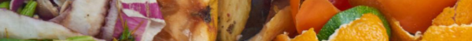
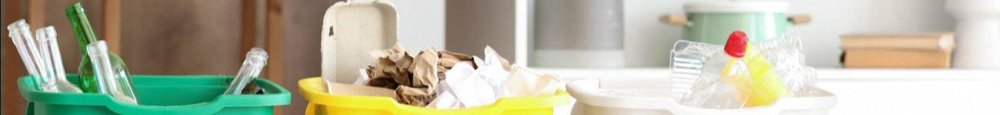
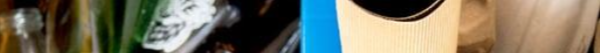
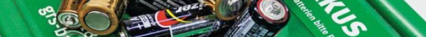
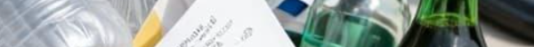

Húmedos
Restos de comidas y residuos orgánicos.
Aprendé a separar los residuos de tu hogar.


Restos de comidas y residuos orgánicos.

Materiales como papel, cartón, vidrio y plástico, según la localidad.

Pilas y aparatos electrónicos.

Residuos que requieren una disposición específica.